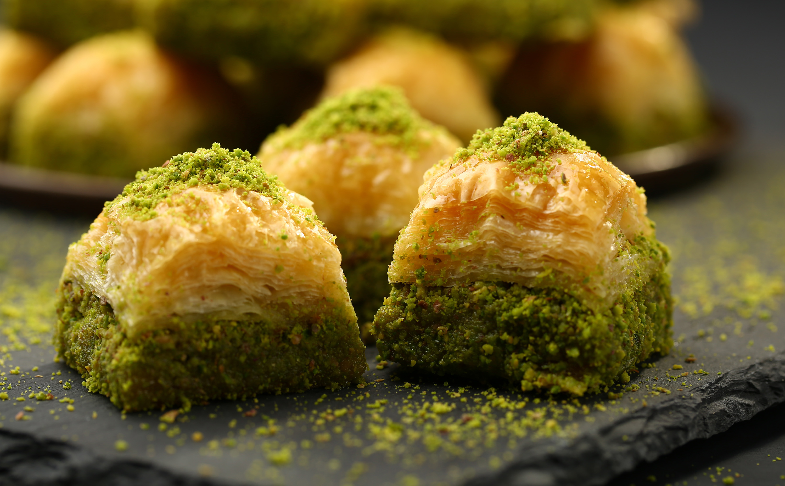

Baklava

A Delicious Gaziantep Baklava
Baklava is a rich, sweet dessert pastry made of layers of filo filled with chopped nuts and sweetened and held together with syrup or honey.
Baklava is usually enjoyed with refreshing Turkish tea.
Ingredients
- 1 x 375 g pack of Antoniou filo pastry
- 500 g ghee or clarified butter, melted
- 350 g pistachio kernels, crushed
- 500 g caster sugar
- ¼ lemon, juiced
Recipe Steps
- To make the sugar syrup, place 600 ml of water and the sugar into a medium-sized pot and cook over a medium heat. Add the lemon juice.
- Take off the heat once it is syrupy and dense, but without caramelising. Cool at room temperature and then pour into a jug. (Do not cool in the fridge or iced water as it will make the syrup too thick.)
- To make the baklava, preheat the oven to 180°C.
- Cut the filo to the size of a 30 cm x 20 cm x 4 cm deep tray. Divide the filo pieces into two and cover with a damp cloth.
-
Brush the base and inside of the tray with the ghee using a pastry brush.
- Place one filo piece at a time into the tray, brushing each layer. On every three layers, sprinkle a very thin layer of crushed pistachios (to aerate the pastry while cooking).
- Once you are halfway, coat the pastry with a thick layer of pistachios. Continue to layer the pastry and brush with the ghee. Once again, on every three layers, sprinkle a very thin layer of crushed pistachios until there are ten layers of filo left. Don’t sprinkle any pistachios on the last ten layers.
- With a sharp knife, cut seven equal pieces widthwise and six equal pieces lengthwise.
-
Pour the remaining ghee over the filo, making sure it goes into the cuts of the filo.
- Cook in the oven for 30 minutes, turning if needed for even cooking.
- The baklava is ready once golden brown. As soon as the baklava comes out of the oven, pour the room temperature sugar syrup on the hot baklava. Rest for 30 minutes to absorb the sugar. Decorate with crushed pistachios.